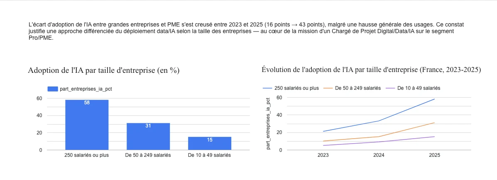

L’usage progresse. L’écart aussi.
J’ai commencé par comparer les entreprises selon leur taille. Entre 2023 et 2025, la part des entreprises déclarant utiliser au moins une technologie d’IA passe de 6 à 18 %. Dans le même temps, l’écart entre les entreprises de 10 à 49 salariés et celles de 250 salariés ou plus passe de 16 à 43 points. Une hausse nationale peut donc masquer des rythmes d’adoption très différents.
| Taille de l’entreprise | 2023 | 2024 | 2025 |
|---|---|---|---|
| 10 à 49 salariés | 5 % | 9 % | 15 % |
| 50 à 249 salariés | 10 % | 15 % | 31 % |
| 250 salariés ou plus | 21 % | 33 % | 58 % |
| Ensemble | 6 % | 10 % | 18 % |
Le champ couvre les entreprises de 10 salariés ou plus implantées en France, dans les secteurs principalement marchands hors agriculture, finance et assurance. Le taux mesure un usage déclaré. Cette enquête ne permet pas de chiffrer les économies réalisées ni d’isoler l’effet de la taille sur l’adoption. Insee, enquête TIC entreprises 2023–2025.
Un autre éclairage pour 2026 : dans le baromètre France Num, 40 % des TPE-PME déclarent utiliser au moins une solution d’IA, contre 26 % en 2025 dans ce même baromètre. Je lis cette évolution à part, car cette enquête a un périmètre et une méthode différents de ceux de l’Insee. Baromètre France Num 2026.

Ce que l’entreprise peut y gagner
Pour une équipe de support, l’IA peut retrouver une procédure et proposer un premier brouillon. Pour une équipe commerciale, elle peut aider à résumer des échanges. Quand la tâche est fréquente et le résultat facile à contrôler, le temps gagné peut être réinvesti dans les dossiers qui demandent plus d’attention.
Dans une étude de terrain publiée en 2025, des agents de support équipés d’un assistant ont résolu en moyenne 15 % de demandes supplémentaires par heure. Les effets variaient selon les agents. Ce résultat donne un point de comparaison pour le support client, dans le contexte de l’entreprise étudiée. Brynjolfsson, Li et Raymond, Generative AI at Work.
Les coûts que je mettrais dans le calcul
Le budget commence avec les licences ou les frais d’usage. Il faut aussi compter le temps pour connecter les outils, mettre les données en ordre, former l’équipe et mettre le système à jour. Ensuite, je mesurerais le temps passé à relire et corriger les réponses. Une tâche qui prenait six minutes et qui demande maintenant deux minutes de rédaction plus trois minutes de vérification ne fait gagner qu’une minute.
La formation compte aussi pour l’adoption. Parmi les entreprises non utilisatrices interrogées, 71 % déclarent ne pas voir l’utilité de l’IA 54 % évoquent un manque d’expertise et 32 % des coûts trop élevés. Ces réponses peuvent se cumuler. Je commencerais donc par un problème que l’équipe reconnaît et qu’elle peut mesurer. Insee, enquête TIC entreprises 2025.
À partir de quand le gain couvre-t-il le coût ?
Cas fictif d’une équipe qui traite 400 demandes par mois à un coût horaire chargé de 32 €. Le budget mensuel équivalent est de 520 € : 300 € d’outils, 120 € de suivi et 100 € pour répartir 1 200 € de mise en place sur douze mois. Le temps gagné ci-dessous est calculé après relecture.
Trois minutes gagnées sur 400 demandes représentent 20 heures, valorisées à 640 €. Le coût mensuel équivalent est de 520 €.
Deux minutes gagnées représentent environ 13 heures et 20 minutes, valorisées à 427 €. Le gain de temps ne couvre plus les 520 €.
Quatre minutes gagnées représentent environ 26 heures et 40 minutes, valorisées à 853 €, pour un coût de 520 €.
Le seuil est d’environ 2 min 26 s gagnées par demande. Le montant représente du temps de travail valorisé. Pour obtenir une économie réelle, l’entreprise doit pouvoir utiliser ce temps autrement ou réduire une dépense.
Les risques changent avec l’usage
Une réponse peut être convaincante et pourtant fausse. Dans une expérience auprès de consultants, l’IA a amélioré la performance sur plusieurs tâches. Sur une tâche choisie parce qu’elle dépassait les capacités de l’outil, la proportion de bonnes réponses était inférieure d’environ 19 points de pourcentage chez les consultants équipés. J’en retiens qu’un test doit inclure des cas difficiles et évaluer la qualité autant que la vitesse. Dell’Acqua et coll., Navigating the Jagged Technological Frontier.
Le déploiement change aussi le travail de l’équipe. Il faut décider qui reste responsable de la réponse, qui corrige les erreurs et quelles données peuvent être envoyées à l’outil. Si les demandes contiennent des données client, je vérifierais les accès, les conditions de réutilisation par le fournisseur et la conservation des données. Les autres risques à suivre dépendent du cas : biais dans les réponses, dépendance au fournisseur ou perte de compétences si l’équipe délègue systématiquement la tâche. CNIL, recommandations sur l’IA générative.
Ma conclusion
Le résultat qui me frappe, c’est que l’IA se diffuse alors que l’écart entre petites et grandes entreprises se creuse. Les données Insee donnent la mesure de cette diffusion. Pour décider d’investir, je partirais d’une tâche précise et je comparerais le temps total, la qualité des réponses et le coût complet avant et après un pilote, sur des demandes comparables. Si le gain tient après relecture et que les erreurs restent acceptables, j’élargirais l’usage. Sinon, je reverrais la tâche ou l’outil avant d’engager davantage de moyens.